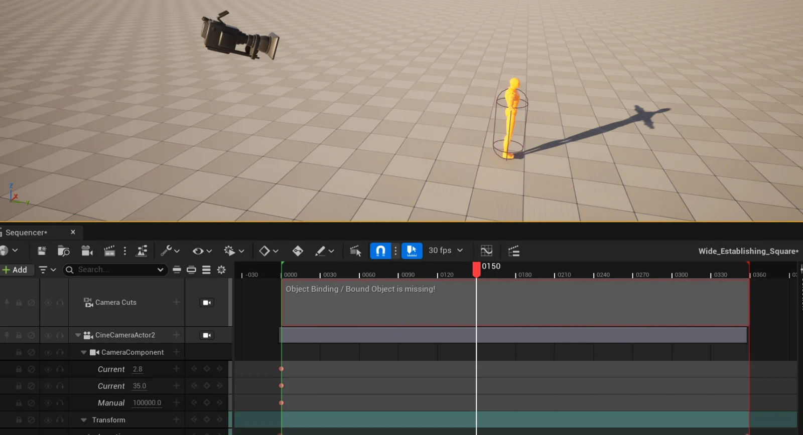
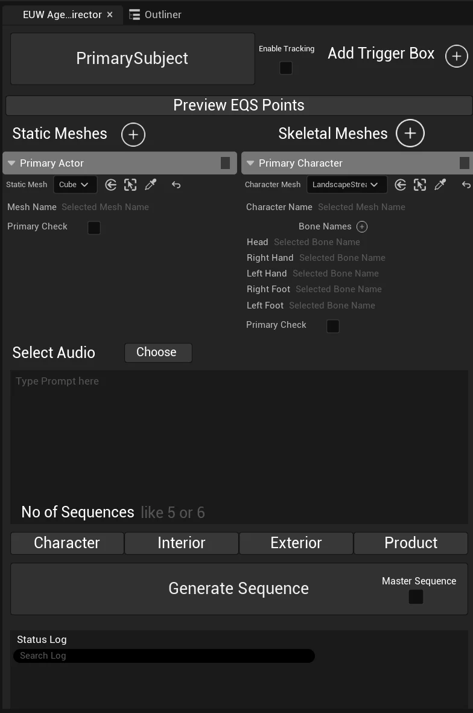
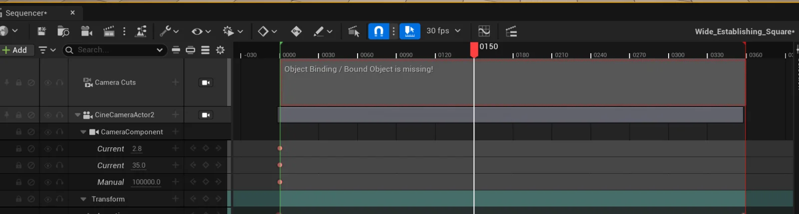

Select the reference
Add characters and meshes from the level and mark one as primary. For characters, name the bones that matter: head, hands, feet.
02AI PoweredUnreal Engine 5.7 editor plugin
Pick a reference subject in the level, describe the moment, and get back real Level Sequences: CineCamera actors, keyframes, lens tracks, look-at tracking, shake, and a master edit. Everything lands in Sequencer, ready to tweak.

The plugin starts from something that already exists in the level: a character, a prop, a building. That subject is the anchor every shot is measured against.
Setting up cinematics by hand means the same loop over and over: place a camera, frame the subject, pick a lens, key the move, make a sequence, repeat, then cut it all together. CinematicAI keeps the craft and removes the repetition.
You select a primary subject, optionally add more characters and meshes, write a prompt, and press Generate. The plugin reads the real geometry of the scene, has a planner reason about framing and timing, and then builds each shot as a native Level Sequence.
Nothing is baked to video. Every camera, key, and track is ordinary Sequencer data, so a director can nudge a lens, retime a move, or delete a shot without leaving the tools they already know.
Five stages. The first two happen in the Director panel, the rest run automatically inside the editor.
Add characters and meshes from the level and mark one as primary. For characters, name the bones that matter: head, hands, feet.
Write the prompt, pick a mode, drop in an audio track if the edit should follow music, and choose how many sequences you want.
Bone transforms, facing direction, height, mesh transforms, and boundary boxes are packaged into one JSON scene description.
The planner returns labelled shots, each with keyframes carrying position, rotation, focal length, aperture, focus distance, shake, and look-at and follow targets.
C++ generates editor Python per shot: spawn the camera, create the sequence, key every track, add tracking and shake, attach, trim, then assemble the master.
Built as a Blueprint utility widget on top of a C++ function library, so it stays inside the editor and can be extended without a rebuild.

Two layers keep the plan honest: measured subject data going in, and collision-aware validation coming out.
For each character the plugin records the world transform of every named bone, the subject’s height, and a facing point projected forward from the most horizontal bone axis. For meshes it records the full transform. Boundary boxes are sent as extents plus transform so the planner can clamp positions in box-local space.
The planner never sees the navmesh or collision directly. Instead, a custom EQS generator builds a projected 3D lattice of candidate points around the subject, with per-axis extents and an override origin bound to query parameters. Trace tests check line of sight to the subject and overlap tests separate free space from geometry, giving Go and NoGo point sets.
Proposed keyframe positions are checked against those points, so a camera that would sit inside a wall or lose sight of the subject is corrected before any sequence is written.
// Scene description sent to the planner (abridged) { "prompt": "slow, sorrowful reveal of the lone figure", "Boxses": [{ "BoundaryExtents1": "X=1200 Y=1200 Z=400", "BoundaryBox1": "Translation: X=0 Y=0 Z=0 ..." }], "PrimaryActor": { "PrimaryActorName": "Character_01", "PrimaryActorheight(cm)": 180, "PrimaryActorBonesLocation": { "Head": "Translation: X=... Y=... Z=...", "H_Right": "...", "H_Left": "...", "F_Right": "...", "F_Left": "...", "PFacing": "(X=...,Y=...,Z=...)" } }, "SecondaryActors": [ ... ] }
The planner is a large language model, but it is not asked to be creative in a vacuum. A long system prompt turns framing into arithmetic it must show its work for.
// One shot from the returned plan "OTS_Character_01_To_Character_02": { "LookAt": "Character_02", "Follow": "Character_01", "keyframe1": { "positions": { "PosX": 142.0, "PosY": -88.5, "PosZ": 168.0 }, "rotations": { "Roll": 0, "Pitch": -4.2, "Yaw": 31.6 }, "time": 0.0, "focal_length": 50, "aperature": 2.8, "focal_distance": 265, "camera_shake": "CameraShake_0-2", "description": "[OTS | Envelope 110cm | 50mm | CamZ 168] ..." }, "keyframe2": { "...": "push in 40 cm over 3.5 s" } }
C++ owns the typed data and generates safe Python; editor Python owns the parts of the Sequencer API that shift between engine versions.

A CineCameraActor is spawned per shot, a Level Sequence is created, and the actor and camera component are added as possessables. Aperture, focal length, and manual focus distance get proper property tracks so they bind instead of showing as broken.
Transform keys are written to double channels, lens keys to float channels, at the sequence’s display rate. Quaternion interpolation is enabled on rotation so yaws near ±180° never swing the long way round.
The plan’s LookAt target becomes real CineCamera look-at tracking tracks. The relative offset is computed from the camera’s current aim so enabling tracking keeps the composition the planner chose.
To follow a moving subject the script first evaluates the sequence at every existing key and rewrites the transforms relative to the parent, then adds the attach track. The shot keeps its look while its motion becomes parent-relative.
Shake assets are resolved by name through the Asset Registry and added as camera shake tracks. Each sequence is trimmed to the plan’s timing and the camera cut stretched to match.
Shots are placed on a cinematic shot track with source trims computed in each sub-sequence’s own tick resolution. Every start, end, and offset is read back after writing and corrected until it matches within a millisecond.
A Blueprint function library parses plans into structs and emits escaped, locale-safe Python commands with hot reload, so the Sequencer scripts can be edited live while the editor is open.
Follow and look-at components with weighted multi-subject targets, screen-space composition from projected bounding boxes, dead zones, critically damped smoothing, dynamic field of view, and auto focus. They tick in the editor viewport and respect Sequencer auto-key on drag.
A custom projected 3D grid generator plus trace and overlap tests turns AI navigation tooling into a collision and visibility check for every proposed camera position.
Plans are requested over HTTPS from C++ with the audio file inlined, and parsed on return. An earlier WebSocket bridge to an external Python service remains for tooling that needs it.